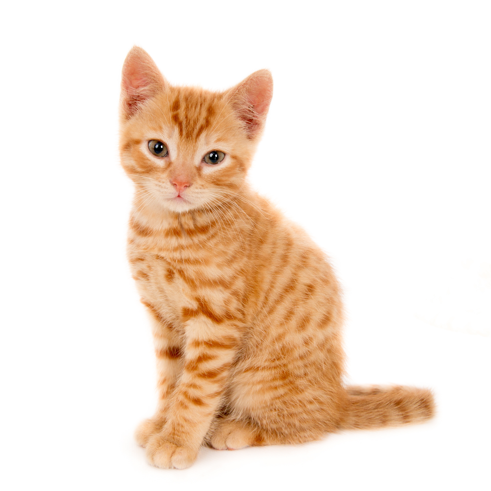

Facts About Cats
In Ancient Egypt, cats were so revered that harming one was a capital crime. When a family cat died, family members would often shave off their eyebrows as a sign of mourning.
In Ancient Egypt, cats were so revered that harming one was a capital crime. When a family cat died, family members would often shave off their eyebrows as a sign of mourning.
